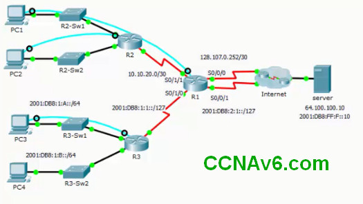
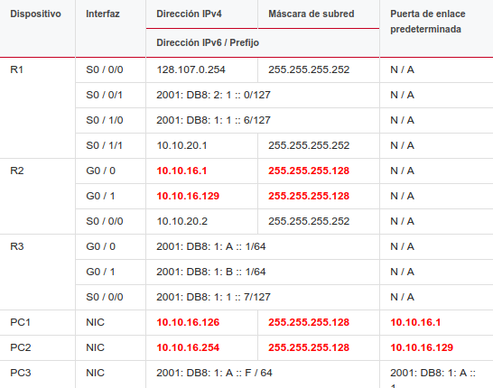
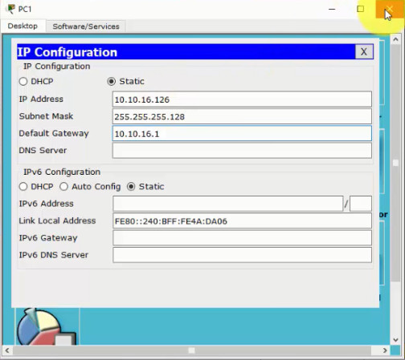
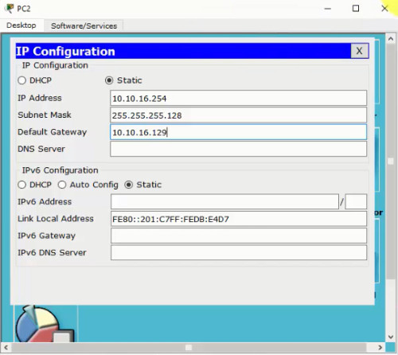

RSE Capítulo 6 SIC Evaluación de habilidades de práctica - Packet Tracer

Algunas cosas a tener en cuenta al completar esta actividad
1. No use el botón Atrás del navegador ni cierre ni vuelva a cargar las ventanas de examen durante el examen
2. No cierre Packet Tracer cuando haya terminado Se cerrará automáticamente
3. Haga clic en el botón Enviar evaluación en la ventana del navegador para enviar su trabajo
Los objetivos
- Diseñe un esquema de direccionamiento IP para proporcionar conectividad a los usuarios finales en una red de pequeñas y medianas empresas.
- Configure rutas estáticas para habilitar la conectividad en una red de pequeñas y medianas empresas.
- Configure rutas estáticas resumidas y flotantes.
- Configure rutas estáticas resumidas y flotantes.
Todas las configuraciones de dispositivos IOS deben completarse desde una conexión de terminal directa a la consola del dispositivo.

Guión
El administrador de red le ha pedido que implemente enrutamiento IPv4 e IPv6 estático y predeterminado en el entorno de prueba que se muestra en la topología. Configure cada ruta estática y predeterminada como directamente adjunta
Requerimientos
1. Utilice el espacio de direcciones 10 10 16 0/24 para diseñar un esquema de direccionamiento
- Divida este espacio de direcciones en dos redes de igual tamaño dividiendo en subredes nuevamente
Subred 1: 10.10.16.0/25
Subred 2: 10.10.16.128/25
- Asigne la primera de estas nuevas subredes a la PC1 LAN

- Asigne la segunda de estas subredes a la PC2 LAN

- Para cada subred, asigne la primera dirección IP utilizable a R2 y la última dirección IP utilizable a las PC
R2 (config) #interfaz G0 / 0
R2 (config-if) #ip dirección 10.10.16.1 255.255.255.128
R2 (config-if) #no apagar
R2 (config-if) #interfaz G0 / 1
R2 (config-if) #ip dirección 10.10.16.129 255.255.255.128
R2 (config-if) #no apagar
R2 (config-if) #exit
2. Configure el resumen de IPv4 y las rutas predeterminadas
- Configure una ruta predeterminada de IPv4 en R2 utilizando la dirección del siguiente salto
R2 (config) #ip route 0.0.0.0 0.0.0.0 10.10.20.1
- Configure una ruta predeterminada de IPv4 en R1 utilizando Serial 0/0/0 como la salida entrelazada
R1 (config) #ip route 0.0.0.0 0.0.0.0 s0 / 0/0
- Configure una ruta de resumen de IPv4 en R1 para las LAN internas. Use la interfaz de salida
R1 (config) #ip ruta 10.10.16.0 255.255.255.0 s0 / 1/1
3. Configure el resumen de IPv6 y las rutas predeterminadas
- Configure una ruta predeterminada de IPv6 en R3 usando la interfaz de salida
R3 (config) # ruta ipv6 :: / 0 s0 / 0/0
- Configure una ruta predeterminada de IPv6 en R1 utilizando Serial 0/0/1 como interfaz de salida
R1 (config) # ruta ipv6 :: / 0 s0 / 0/1
- Configure una ruta de resumen de IPv6 en R1 para las LAN internas. Utilice la interfaz de salida.
R1 (config) # ruta ipv6 2001: db8: 1: a :: / 63 s0 / 1/0
4. Configure una ruta estática flotante de IPv4 en R1 a la red 64.100.100.0/24 utilizando Serial 0/0/1 como la interfaz de salida. Haga que la ruta estática flotante sea menos confiable que la ruta predeterminada por una unidad de AD.
R1 (config) #ip ruta 64.100.100.0 255.255.255.0 s0 / 0/1 5
Si su configuración se ha completado correctamente, todos los hosts deben poder comunicarse con el servidor que está conectado a Internet.